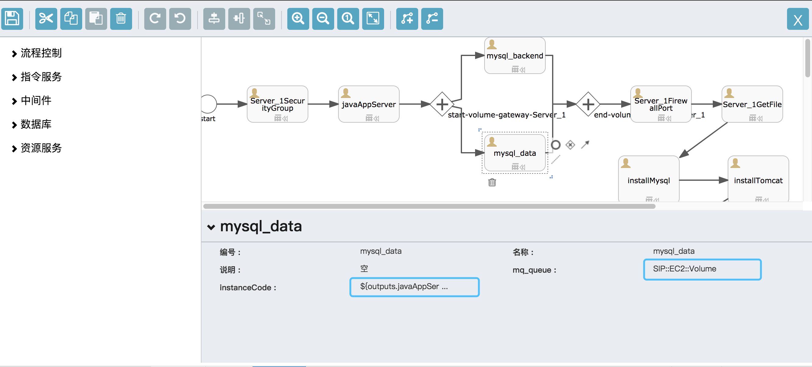
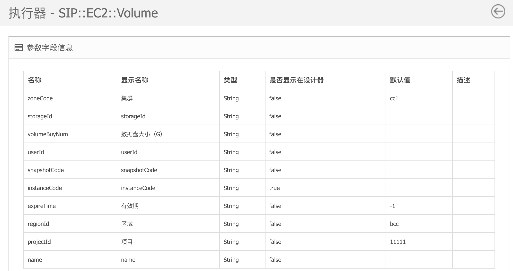
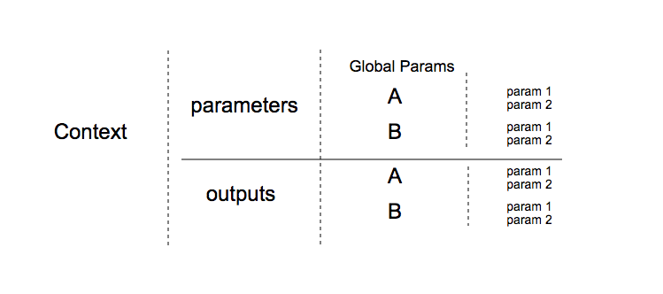

Stone基本参数结构
在4.1执行器章节中，有介绍到，执行器有输入参数定义和输出结果定义。其中设置为设计器可见的，会出现在设计器中，如下图所示：

mysql_data在上图中，是一个申请云存储的执行节点，包含以下参数：
- 流程参数：每个Stone都会有的参数
- 编号：不能为中文
- 名称：显示在流程模型和流程实例中的名称
- 说明：一段描述文字
- mq_queue：执行器的唯一编号
- Stone参数：Stone独有的业务参数
- InstanceCode： 挂接到云实例的编号
${},是
activiti和SipRS都使用的参数引用格式如上图所示，${outputs.javaAppServer.instanceCode}是引用javaAppServer节点的输出中，key为instanceCode的输出
实际上对比该执行器在3.3 执行器中所展示的参数结构，会发现还有若干参数，是不展示在设计器中的。

不排除有一些参数是可选参数，但更多的场景是：这些参数一般会在流程启动时传入，而不是在流程模型中写死。
例如上图中所展示的，存储卷创建时所需的大小，集群位置，有效期等业务参数更多的是需要在启动流程时传入。
总结：
- Stone的参数分为流程固有参数，和独有的业务参数
- 业务参数中一部分可以在流程模型中维护，一部分适合在流程启动时传入
- 参数的引用格式为${}
参数引用
上文已经介绍过，流程模型中的参数引用格式为${}，那么本节会说明整个流程的参数结构，以便开发者可以正确的引用参数。
每一份流程会只有一份上下文，我们要引用的变量就在这份上下文中。而上下文中的变量除了启动流程时传入的参数以外，还会有各个执行节点的输出结果。
例如云主机的执行节点，会输出云主机的编号到上下文中，如上文的${outputs.javaAppServer.instanceCode}，instanceCode就是主机编号。
如果一份流程模型中，存在两个同样的执行节点呢？instanceCode会不会互相覆盖掉。
为了解决这个问题，我们定义了namespace，即作用域。${outputs.javaAppServer.instanceCode}中的outputs表示是上下文中的输出，javaAppServer表示的是作用域，那么instanceCode就会取到唯一值了。
总结

- 参数引用格式为
${} - 参数分为parameters和outputs，存储于流程的上下文中
- 参数的引用级别如上图所示
- parameters.globalXX
- parameters.A.param1
- outputs.A.param1
- 如不是outputs前缀，则默认为参数，如${parameters.globalXX} = ${globalXX}